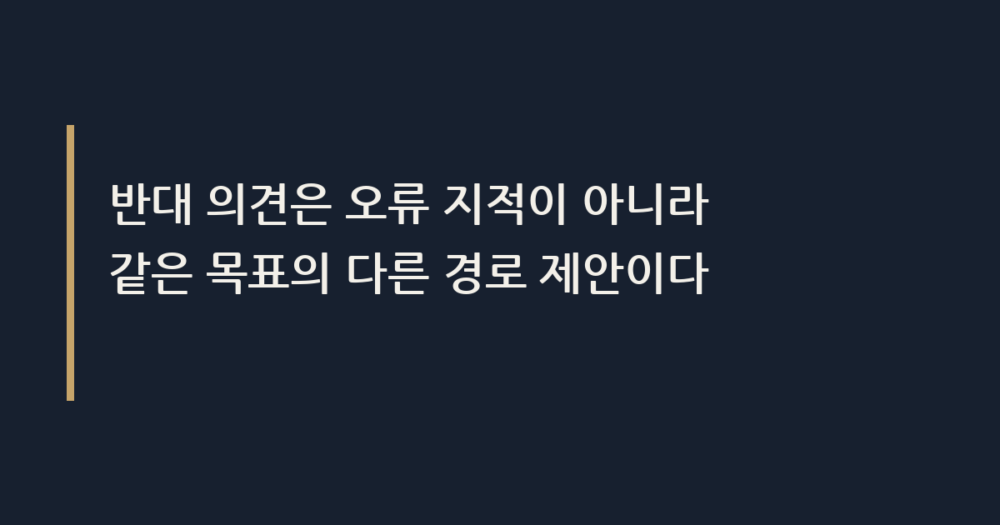
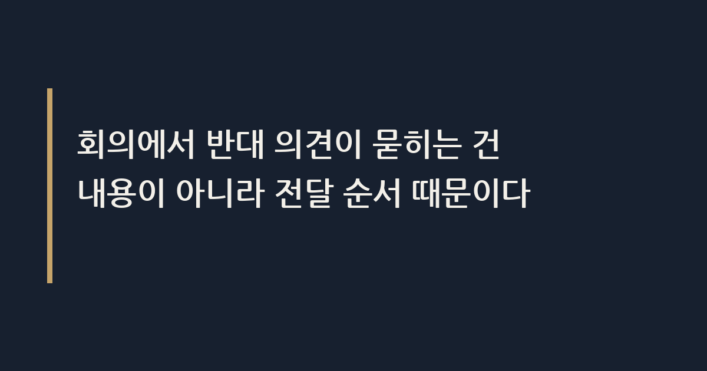

주제 회의에서 반대 의견을 말하는 문장 (evergreen / office)
제목 후보
메타 설명 회의에서 반대 의견 말할 때 묻히는 이유와, 실제로 통하는 문장 다섯 가지를 상황별로 정리했다.
라벨 회의스킬, 직장생활팁, 반대의견말하기, 회의화법, 비즈니스커뮤니케이션, 보고스킬, 직장인소통, 회의예시문장, 상사소통법, 오피스라이프
실용 자산 예시 문장 모음 — 검색자가 바로 복사해 쓸 수 있는 실제 문장이 필요한 도구형 주제라 상황별 예시 문장을 넣었다
발행 전 팩트체크
이미지 (Blogger 편집기에 드래그해 넣으세요)
도입부 사진 · ⓒ SimplyHuman / Pexels


마케팅본부 대회의실, 오후 2시. 신제품 캠페인 2차 예산 집행안 회의였다. 스크린에는 이미 결재 라인을 다 돌았다는 듯한 PPT가 떠 있었고, 팀장은 빠르게 안건을 넘기고 있었다. 그때 입사 2년 차 김 대리가 손을 들었다. "저는 좀 다른 생각인데요, 이 예산을 전부 디지털에 쏟는 건—" 말이 끝나기도 전에 공기가 바뀌었다. 팀장은 "음, 알겠고" 하더니 다음 장표로 넘어갔다.
회의가 끝나고 복도에서 김 대리가 물었다. "저 틀린 말 한 거 아니잖아요. 근데 왜 아무도 안 들어줘요?" 틀린 말이 아니었다. 문제는 내용이 아니라 순서였다. 회의에서 반대 의견이 묻히는 이유는 열에 아홉, 말의 내용이 아니라 그 말이 던져지는 타이밍과 방식 때문이다.
회의란 결정을 확인하는 자리이기 전에, 참석자들의 체면이 오가는 사회적 의식이다. 그래서 "저는 다른 생각인데요"라는 문장 자체는 중립적이어도, 이미 공개적으로 결정된 안에 대고 던져지면 듣는 사람 귀에는 "당신 틀렸어요"로 번역된다. 김 대리의 문장이 그랬다. 내용은 멀쩡했는데, 팀장이 결재까지 다 받고 발표하는 그 순간에 제동이 걸린 것이다.
반대 의견이란 상대 주장의 오류를 지적하는 말이 아니라, 같은 목표를 향한 다른 경로를 제안하는 말이다. 이 정의를 받아들이면 문장이 달라진다. "그건 아닙니다"가 아니라 "그 목표로 가는 다른 길도 있습니다"가 된다. 회의에서 반대 의견이 묻히는 이유는 내용이 틀려서가 아니라, 말이 던져지는 타이밍과 순서가 어긋나기 때문이다. 같은 내용을 두고도 회의 전에 메신저로 미리 운을 뗀 사람과, 회의 중 즉석에서 던진 사람의 반응이 갈리는 걸 자주 봤다. 전자는 "검토해볼까요"라는 답을 듣고, 후자는 "일단 넘어가죠"라는 답을 듣는다.
나도 임원 자리에 있을 때 비슷한 순간을 겪었다. 브랜드 리뉴얼 네이밍 회의에서 대표가 "이름은 이미 정했다"고 선언한 적이 있었다. 그 자리에서 나는 "대표님이 원하시는 방향, 그러니까 브랜드를 더 젊게 보이게 하자는 목표에는 저도 동의합니다. 다만 그 이름이 20대 타깃한테 실제로 어떻게 들리는지 데이터 하나만 보여드려도 될까요"라고 말했다. 대표는 자료를 보더니 그 자리에서 이름을 바꾸라고 지시했다.
차이는 하나다. 반대부터 말하지 않고 동의할 수 있는 지점부터 말했다. 회의에서 반대 의견을 말하기 전에 먼저 할 일은 상대가 세운 목표에 동의한다는 걸 짧게라도 밝히는 것이다. 그래야 다음에 나오는 말이 "공격"이 아니라 "제안"으로 들린다. 이 순서를 지키지 않으면 아무리 맞는 말이어도 회의실 공기만 얼어붙고, 결국 그 의견은 회의록에 "기타 의견"으로만 남는다.
타이밍은 세 구간으로 나뉜다. 안건이 올라오기 전, 발표 중간, 결론이 난 뒤. 이 중 가장 위험한 구간은 발표가 끝나고 팀장이 "이견 없으시죠"라고 묻기 직전이다. 이미 공개적으로 결론을 선언하려는 순간에 반대가 끼어들면 상대는 체면을 지킬 틈 없이 공격당한 셈이 된다. 가장 안전한 구간은 의외로 발표 중간, 특히 자료 화면이 바뀌는 사이의 짧은 공백이다. "잠깐 질문 하나만 드려도 될까요"라고 운을 떼면 발표자도 멈출 명분이 생기고, 듣는 사람도 결론이 나기 전이라 부담이 적다.
실제로 분기 예산 회의에서 본 장면이 있다. 한 과장이 발표 중간, 세 번째 장표에서 "잠깐 숫자 하나만 확인하고 넘어가도 될까요"라고 물었다. 발표자는 자연스럽게 말을 멈췄고, 거기서 나온 질문이 결국 예산안 전체의 전제를 바꿨다. 같은 내용이라도 결론이 난 뒤에 나왔다면 전혀 다르게 받아들여졌을 거다.
그대로 써먹을 수 있는 문장 다섯 개를 상황별로 정리했다. 왼쪽은 실제로 회의실에서 자주 듣는, 그래서 자주 묻히는 표현이고 오른쪽은 같은 내용을 다른 순서로 말한 것이다.
| 상황 | 묻히는 표현 | 통하는 표현 |
|---|---|---|
| 상사 기획안에 반대할 때 | "그건 좀 아닌 것 같습니다" | "방향에는 동의합니다. 다만 B안으로 가면 같은 목표를 더 빨리 달성할 수 있을 것 같습니다" |
| 동료 아이디어에 반대할 때 | "그거 전에도 해봤는데 안 됐어요" | "그 시도 좋은데요, 예전에 비슷한 걸 할 때 이런 변수가 있었거든요. 같이 풀어보면 좋겠어요" |
| 다수 의견에 혼자 반대할 때 | "저만 다른 생각인데…" | "논의를 조금 더 단단하게 만들려고 반대 입장에서 질문 하나 드려도 될까요" |
| 데이터 근거로 반대할 때 | "감으로는 아닌 것 같은데요" | "지난 분기 수치를 보면 이 가정이 안 맞을 수도 있어서요, 같이 확인해볼까요" |
| 상사가 결정을 밀어붙일 때 | "그건 위험한데요" | "이 결정의 리스크를 한 번만 정리해서 공유드려도 될까요, 진행은 그대로 하더라도요" |
직급이 높은 사람 앞에서 반대가 유독 조심스러운 이유는 그 말 한마디가 조직 전체에 선례로 남기 때문이다. 부사장이 참석한 자리에서 "그건 아니지"라는 말을 직접 들은 신입사원이 그다음 회의부터 입을 닫는 걸 본 적이 있다. 반대로 반응한 것이다. 반대를 들은 게 아니라 반대를 당한 느낌을 받은 거다.
후배가 상사에게 반대할 때는 목표 동의와 질문형을 반드시 섞어야 한다. 동료끼리는 데이터나 경험을 먼저 공유하는 편이 안전하다. 상사가 후배 의견에 반대할 때는 오히려 더 조심해야 한다. 영향력이 큰 사람의 반대는 그 한마디로 토론 자체가 끝나버리기 때문에, 질문으로 열어두는 편이 팀 전체의 생각을 더 끌어낸다. 임원 회의에서 신입 기획자의 아이디어에 "그건 예산이 안 돼"라고 즉답했다가, 그 뒤로 그 기획자가 회의 내내 메모만 하고 입을 열지 않은 걸 본 적도 있다. 한 번의 단칼 같은 반대가 한 사람의 발언을 몇 달간 막아버릴 수 있다.
화상회의는 말을 끊는 타이밍이 더 까다롭다. 마이크가 겹치면 누구 말인지도 흐려지고, 침묵이 길어지면 어색함이 배가 된다. 이럴 때는 채팅창을 먼저 활용하는 게 낫다. "질문 있습니다"라고 채팅에 남긴 뒤 진행자가 호명하면 그때 말을 꺼내는 식이다. 실제로 원격 근무가 많아진 요즘, 채팅으로 먼저 손을 든 사람의 반대 의견이 음성으로 불쑥 끼어든 반대보다 훨씬 잘 받아들여지는 걸 여러 번 봤다. 화면 너머에서는 표정과 분위기를 읽기 어려운 만큼, 형식을 갖춰 반대를 던지는 게 오히려 더 중요해진다.
이미 분위기가 가라앉았다면 그 자리에서 되돌리려 애쓰지 않는 게 낫다. 회의가 끝난 뒤 1:1 메시지로 다시 짧게 정리해서 보내는 편이 훨씬 효과적이다. "아까 회의 때 말씀드린 부분, 혹시 자료로 한 장 정리해서 다시 공유드려도 될까요" 정도면 충분하다. 공개 석상에서 밀린 의견도 개인 메시지로는 다시 살아난다.
이 방식이 유효한 이유는 반대를 들은 사람이 체면을 지킬 공간을 다시 만들어주기 때문이다. 여럿이 보는 자리에서 입장을 바꾸는 건 누구에게나 부담이지만, 조용한 자리에서는 생각보다 쉽게 바뀐다.
내용보다 타이밍과 어투가 평판을 결정한다. 근거를 갖추고 목표에 동의한 뒤 던지는 반대는 오히려 "생각이 있는 사람"이라는 평판을 쌓는다. 미움받는 건 반대 자체가 아니라 준비 없이 던지는 반대다.
공개 회의 석상보다 1:1로 먼저 타진하는 편이 안전하다. 여러 사람 앞에서 체면을 지켜야 하는 상황을 만들지 않는 게 핵심이고, 목표에 먼저 동의를 표하는 순서는 상사 앞에서 특히 더 중요하다.
회의 직후 메일이나 메신저로 의견을 짧게 다시 남겨둔다. 그 자리에서 묻혔다고 사라진 게 아니라, 기록으로 남겨두면 나중에 "그때 말씀드렸던" 근거로 다시 꺼낼 수 있다.
김 대리에게 나중에 해준 말은 간단했다. 틀린 말이 아니었으니 내용을 바꾸지 말고, 던지는 순서만 바꿔보라고. 다음 회의에서 그는 "팀장님이 말씀하신 전환율 목표에는 저도 동의합니다. 다만 채널 배분을 조금 다르게 하면 그 목표에 더 빨리 닿을 것 같습니다"라고 말했다. 같은 회의실, 같은 팀장인데 반응이 달랐다. 씁쓸하면서도 꽤 인상적인 순간이었다. 말의 내용은 그대로였는데, 순서만 바꿨을 뿐인데 받아들여지는 결과가 이렇게 달라지다니.
Q. 회의에서 좋은 의견이었는데 묻혀버린 경험, 저만 있는 건 아니죠?